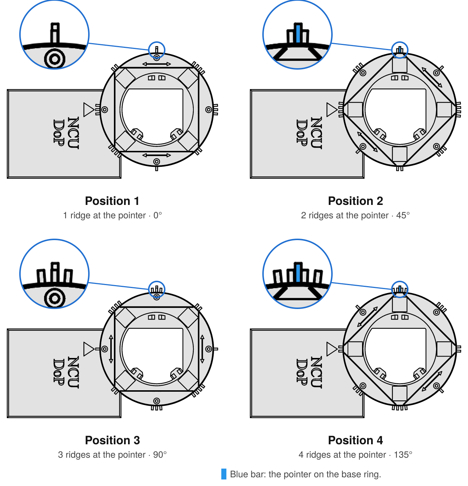
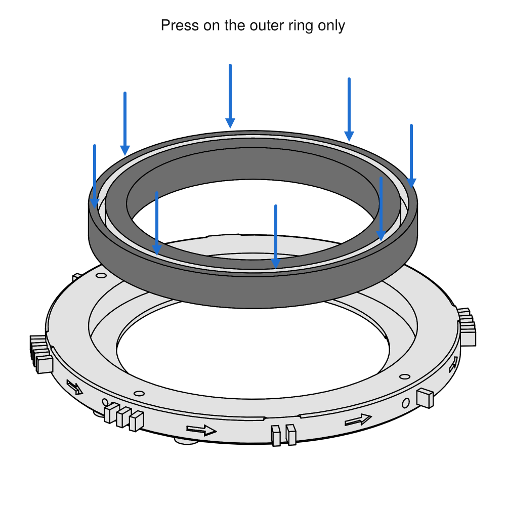
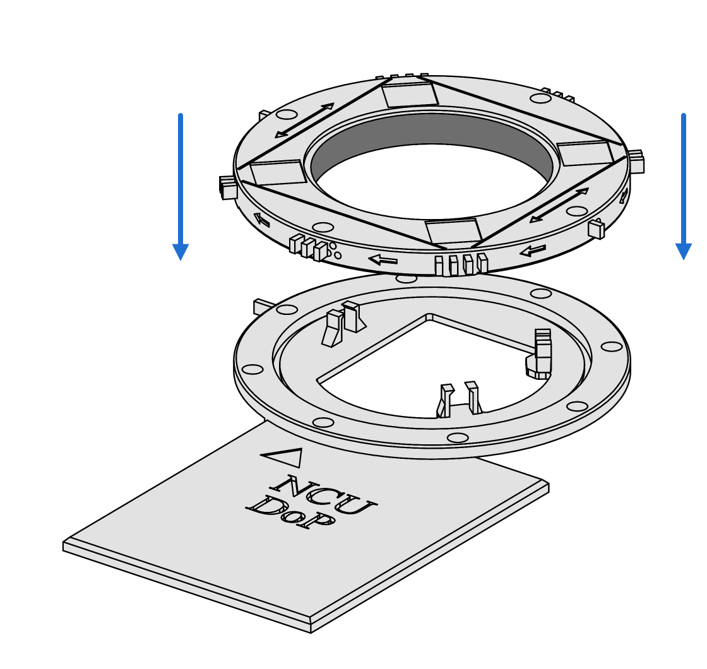

S012Cam
Polarizer Rotator
組裝、校正並操作 S012Cam Polarizer Rotator。
組裝動畫：校正、軸承與 MagSafe
原組裝動畫節選。下方圖文包含其餘步驟；請依目前的零件表與順序組裝。可播放、暫停或直接跳到要看的部分。
3. 清點零件
| 零件 | 數量 | 用途 |
|---|---|---|
| 底座 | 1 | 固定軸承並連接 MagSafe 底板。 |
| 轉盤 | 1 | 固定偏光片，並在軸承上旋轉。 |
| MagSafe 底板 | 1 | 放置磁鐵貼片，將底座連到 iPhone。 |
| MagSafe 磁鐵貼片 | 1 | 帶尾端的磁鐵環。外徑 54 mm、內徑 46 mm。兩面有黏性，各覆一層藍色膜。 |
| 薄型軸承 | 1 | 50 × 65 × 7 mm，讓轉盤平順旋轉。 |
| 圓磁鐵 | 12 | 底座 8 顆、轉盤 4 顆，讓轉盤在各角度定位。 |
| 方磁鐵 | 3 | 4 × 4 × 4 mm，將軸承內環固定於底座。 |
| 線性偏光片 | 1 | 60 × 60 mm，篩選沿透光軸振盪的光。 |
| 奈米凝膠貼片 | 9 | 10 × 10 mm。4 片固定偏光片，5 片連接 MagSafe 底板與底座。 |
底座固定在 iPhone 上，轉盤則可旋轉。底座指標對準轉盤邊緣的一道、兩道、三道或四道凸紋，表示目前位置。小箭頭表示旋轉方向，雙向箭頭表示偏光片的 0° 透光軸。
| 位置 | 指標對準的凸紋數 | 角度 |
|---|---|---|
| 1 | 1 | 0° |
| 2 | 2 | 45° |
| 3 | 3 | 90° |
| 4 | 4 | 135° |
每組凸紋在相對兩側各出現一次，代表相同的偏光片角度。轉盤每 45° 定位一次，一圈共有 8 次。

圖 2：轉盤位置圖：四個貼片槽、轉向箭頭、透光軸箭頭，以及一至四條凸紋。

圖 3：位置 1–4 對應 0°、45°、90°、135°。讀取底座指針所對應的凸紋組。
4. 組裝轉盤
校正、軸承與 MagSafe 安裝動畫可在網站播放：https://teyuan-lab.github.io/S012Cam-webpage-manual/zh/rotator.html#assembly-movie
步驟 1：檢查列印件
若有列印支撐，先用小鉗子取下較大的支撐，再以美工刀小心修平殘料。刀口朝外，遠離手部。無支撐列印可跳過拆除。確認圓磁鐵孔、軸承凹槽和方磁鐵卡座均無殘料。
步驟 2：壓入圓磁鐵
將 12 顆圓磁鐵保持疊成一串。每次從同一端滑下一顆，讓同一面先入孔。底座裝 8 顆，轉盤裝 4 顆，壓至與表面齊平。若裝反，用鈍針從孔後推出，再翻面裝回。

圖 4：每顆圓磁鐵的朝向保持一致。每次從磁鐵疊的同一端取下。

圖 5：底座裝八顆圓磁鐵，轉盤裝四顆。
步驟 3：安裝軸承
將轉盤翻面，把軸承放入圓形凹槽。沿外環均勻按壓，直到貼住止擋。

圖 6：只按壓軸承外環，四周均勻施力。
步驟 4：裝到底座
把轉盤和軸承放到底座上，讓軸承內環套住底座凸台。

圖 7：將轉盤與軸承一起套到底座凸台。
步驟 5：插入方磁鐵
從轉盤中央，將 3 顆方磁鐵分別放入卡座。它們會把軸承內環固定在底座上。

圖 8：三個藍圈標示方磁鐵卡座。
步驟 6：檢查旋轉
沿箭頭轉一圈。每 45° 應卡住一次，轉動時不應摩擦。轉盤與底座間約有 1 mm 間隙。方磁鐵應留在底座與軸承內環上，不隨轉盤轉動。若某一格排斥轉盤，將該格的圓磁鐵翻面。

圖 9：貼偏振片前先檢查組裝好的轉盤，轉動時應沒有摩擦。
5. 安裝與校正偏光片
找出透光軸
- 先保留保護膜。
- 從較低的角度，觀察玻璃桌面等水平亮面的反光。
- 將偏光片放在眼前慢慢旋轉，直到反光最暗。
- 保持偏光片方向不變，在保護膜靠近一角處畫一條垂直短線。這條線表示透光軸。

圖 10：透過偏振片看反光，慢慢轉動至反光最暗。

圖 11：同一張玻璃桌：左側反光明亮，右側反光被抑制。

圖 12：反光最暗時，在保護膜上畫出垂直的透光軸標線。
貼到轉盤
- 將轉盤轉到位置 1，讓底座指標對準一道凸紋。
- 在轉盤四個凹槽各貼一片凝膠貼片，撕開上層離型膜。
- 讓偏光片保護膜朝上，筆線平行於雙向箭頭，邊緣對準刻線。
- 按壓四角固定，再撕掉保護膜。偏光片四角略超出圓形轉盤是正常的。

圖 13：四片凝膠貼片放在轉盤凹槽內，固定偏振片。

圖 14：在位置 1，讓透光軸標線平行於雙頭箭頭。
6. 安裝 MagSafe 底板並裝上 iPhone
安裝磁鐵貼片
- 先不撕藍膜，將貼片兩面分別靠近 iPhone 背面，找出吸得牢的一面。
- 只撕掉這一面的藍膜，將它朝下壓入 MagSafe 底板的環形凹槽，尾端放入槽口。兩個小耳朵屬於藍膜，會隨膜一起取下。
- 沿整個圓環壓牢。另一面的藍膜等連接底座前再撕。
連接底板與底座
- 將剩下的 5 片凝膠貼片放入五個方形凹槽：中央一片、四角各一片。
- 撕掉貼片上層離型膜及磁鐵貼片另一面的藍膜。
- 將 MagSafe 底板與底座背面邊緣對齊。底板的平背面應朝向 iPhone。
- 均勻按壓 10 秒。
裝上手機並檢查
用軟布擦乾淨 iPhone 背面。將轉盤吸附上去，讓鏡頭窗對準後鏡頭。開啟 S012Cam，逐一檢查可用鏡頭。若有邊緣被擋住，取下轉盤後重新吸附。
若要取得完整超廣角畫面，先取下手機殼。手機殼可能遮住超廣角畫面的左上角。
第一次量測前，保持手機水平，拍攝水平亮面的反光。結果應顯示水平偏振。若顯示垂直偏振，將偏光片轉 90° 後重新貼合。

圖 15：MagSafe 底板的環槽、尾槽與五片凝膠貼片。